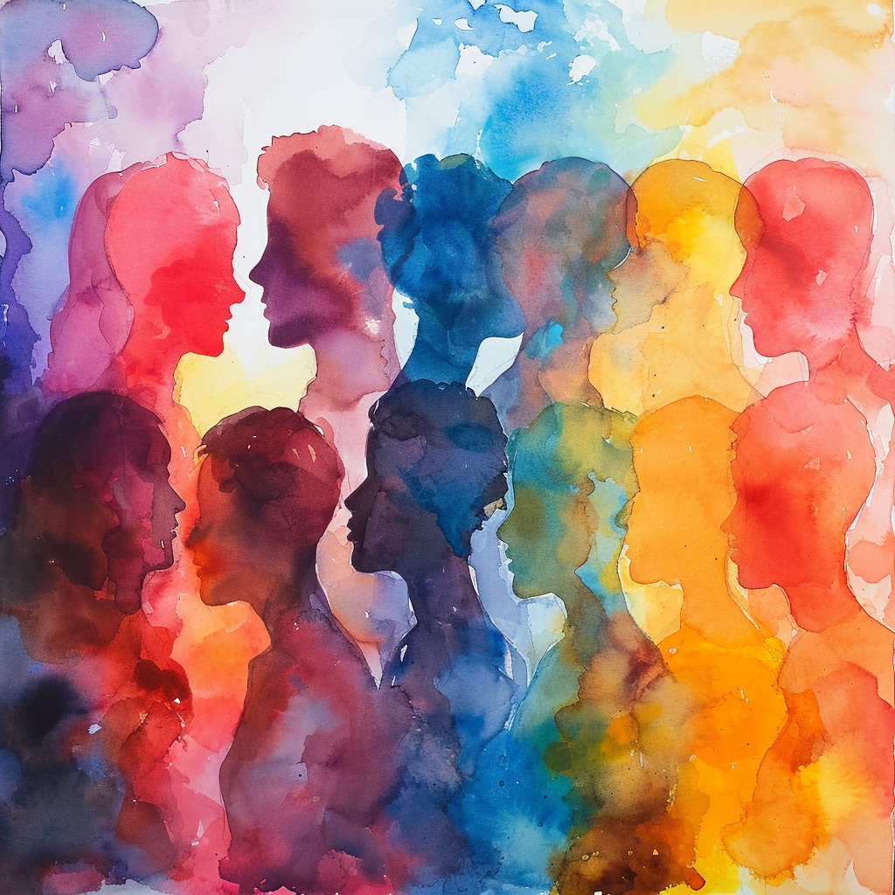

Offenheit - das Wesentliche
1. Einleitung: Persönliche Reflexion über Offenheit
Wenn ich auf das Jahr 2023 zurückblicke, gewinne ich den Eindruck, dass das Wesentliche in meinem Berufs- und Privatleben in den Verbindungen mit anderen Menschen liegt. Dashalb ist die Offenheit für Andere, mit und an denen ich lerne nicht nur ein abstraktes Ideal oder eine berufliche Anforderung, sondern ein wesentlicher Bestandteil meiner täglichen Existenz. Dieses Bewusstsein hat mich dazu inspiriert, meine Neujahrsvorsätze für 2024 um das Thema Offenheit herum zu gestalten.
Meine bisherigen Erfahrungen mit Offenheit haben mich gelehrt, dass es viel mehr ist als nur ein offenes Ohr für andere zu haben oder neue Ideen willkommen zu heißen. Es geht darum, mich selbst für neue Erfahrungen, Veränderungen und unterschiedliche Perspektiven zu öffnen. Ich habe gelernt, dass Offenheit eine Haltung ist, die Mut erfordert – den Mut, sich dem Unbekannten zu stellen, Veränderungen zu akzeptieren und manchmal auch das Risiko einzugehen, verletzlich zu sein.
Für das kommende Jahr möchte ich mich noch stärker auf das Wesen der Offenheit konzentrieren. Ich habe erkannt, dass Offenheit nicht nur ein Weg ist, mein Leben zu bereichern, sondern auch ein Mittel, um effektiver zu kommunizieren, tiefere Beziehungen aufzubauen und eine bereichernde Arbeitsumgebung zu schaffen. Offenheit soll in meinem Alltag zur Grundlage meiner Entscheidungen und Interaktionen werden.
Dies bedeutet, dass ich bewusst Raum schaffen möchte für das Zuhören und Verstehen anderer Meinungen, auch wenn sie von meinen eigenen abweichen. Es bedeutet auch, mich neuen Herausforderungen und Möglichkeiten zu stellen, ohne von vornherein eine defensive Haltung einzunehmen. In beruflicher Hinsicht möchte ich offener für kreative und innovative Ansätze sein, die über herkömmliche Methoden hinausgehen, und ich strebe danach, Offenheit als ein Schlüsselelement in meiner Arbeitskultur zu etablieren.
Meine Neujahrsvorsätze für 2024 drehen sich also darum, Offenheit in meinem Denken und Handeln zu kultivieren. Ich möchte lernen, flexibler zu sein, meine Komfortzone zu erweitern und mich aktiv auf das Unbekannte einzulassen. Durch diese Reise erhoffe ich mir, nicht nur persönlich zu wachsen, sondern auch positiv auf die Menschen um mich herum einzuwirken. Offenheit ist für mich das Schlüsselwort für 2024 – ein Jahr, in dem ich mich auf das Wesentliche konzentrieren und neue Wege des Lernens und der Gemeinschaft erkunden möchte.
2. Offenheit in meinem Alltag: Eine neue Perspektive
In meinem Streben nach Offenheit im neuen Jahr möchte ich diese nicht nur als abstraktes Konzept verstehen, sondern sie konkret in meinen Alltag integrieren. Offenheit in meiner täglichen Kommunikation und in meinen Beziehungen soll zu einem zentralen Fokus werden.
Erstens plane ich, in meinen beruflichen Beziehungen geschlossene Systemen zu überwinden. Dies bedeutet für mich, mich aktiv um eine Kultur der Offenheit und Transparenz zu bemühen. Ich möchte die Silo-Mentalität abbauen, die in vielen Organisationen vorherrscht, und stattdessen eine Umgebung schaffen, in der Wissen und Informationen frei geteilt werden. Durch das Überwinden geschlossener Systeme erhoffe ich mir, ein integratives und kollaboratives Arbeitsumfeld zu fördern, in dem Ideen und Innovationen gedeihen können. Das bedeutet Social-Media-Walls und geschlossene Plattformen (sowie meine 23.461 Tweets) hinter mir zu lassen und offene, dezentrale Anschlussmöglichkeiten zu erlernen um Offenheit auch substantiell und nachhaltig zu ermöglichen.
Ein weiterer Aspekt meiner Alltags-Offenheit bezieht sich auf meine persönliche Entwicklung. Ich möchte mich neuen Erfahrungen und Herausforderungen stellen, die mich aus meiner Komfortzone herausholen. Das kann bedeuten, Permakultur auszuprobieren, mich wieder musikalisch zu betätigen oder meine Kompetenzen online zu erweitern. Diese Schritte sollen nicht nur zur Selbstentfaltung beitragen, sondern auch meine Fähigkeit stärken, mit Veränderungen und Unsicherheiten umzugehen.
Schließlich erkenne ich, dass Offenheit auch bedeutet, sich selbst gegenüber ehrlich zu sein. Es geht darum, meine eigenen Gefühle, Ängste und Hoffnungen anzuerkennen und sie nicht zu unterdrücken. Indem ich mir meiner eigenen inneren Welt bewusst werde, kann ich authentischer mit anderen interagieren und eine tiefere Selbstkenntnis entwickeln, die mich dann hoffentlich auch anschlussfähiger macht. Also mehr Offenheit in Arbeit und freiZEIT
Durch diese konkreten Schritte hoffe ich, Offenheit zu einem integralen Bestandteil meines täglichen Lebens zu machen. Ich bin überzeugt, dass dies nicht nur mein persönliches Wachstum fördern, sondern auch meine Beziehungen zu anderen bereichern wird. Offen zu sein bedeutet für mich, aktiv und bewusst zu leben, immer bereit, neue Perspektiven zu erkunden und das Leben in all seinen Facetten zu umarmen. Indem ich Offenheit in meinen Alltag integriere, öffne ich die Tür zu einer Welt voller neuer Möglichkeiten, Lernerfahrungen und tiefgreifender Verbindungen.
3. Offenheit in Bildung und Lernen: Ein lebenslanger Prozess
In meinem Streben nach Offenheit im Jahr 2024 möchte ich mich besonders auf den Bereich der Bildung und des Lernens in offenen Communities konzentrieren. Offene Bildungsressourcen (OER) bieten eine wunderbare Gelegenheit, sich kontinuierlich weiterzuentwickeln und zu lernen. Meine Beteiligung an OER ist nicht nur ein berufliches Engagement, sondern auch ein persönliches Anliegen, das meine Leidenschaft für lebenslanges Lernen widerspiegelt.
Ich sehe OER als eine Möglichkeit, Bildung zugänglicher und inklusiver zu gestalten. Durch meine Beteiligung an Projekten und Initiativen, die OER-Communities fördern, möchte ich dazu beitragen, Wissen frei verfügbar zu machen und Lernmöglichkeiten für Menschen aus unterschiedlichen Hintergründen zu schaffen. Dies beinhaltet auch die Förderung von Netzwerkknoten und Gemeinschaften, die offene Bildungsressourcen unterstützen und entwickeln.
Ein weiterer Schwerpunkt für mich ist die kontinuierliche eigene Weiterbildung durch OER. Ich plane, Online-Kurse, Webinare und andere offene Bildungsangebote zu nutzen, um meine Fähigkeiten und mein Wissen zu erweitern. Dieses Engagement für das lebenslange Lernen ist ein Kernaspekt meiner persönlichen und beruflichen Entwicklung.
Ich möchte auch mein Netzwerk aus Gleichgesinnten erweitern, die den Wert offener Bildung erkennen und fördern, wie beispielsweise im Bündnis Freie Bildung. Durch den Austausch mit anderen, die in diesem Bereich aktiv sind, kann ich neue Ideen und Perspektiven gewinnen und gleichzeitig meine eigenen Erfahrungen teilen. Dieser Austausch wird mir helfen, meine Rolle in der OER-Community zu stärken und effektiver zur Weiterentwicklung von offenen Bildungsressourcen beizutragen.
Schließlich sehe ich Offenheit in der Bildung als einen Weg, um kritisch zu denken und kreative Lösungen für Herausforderungen zu finden. Offene Bildungsressourcen ermutigen mich, über traditionelle Lernmethoden hinauszugehen und innovative Ansätze in meinem Lernprozess zu erkunden.
4. Qualitätssicherung und Standardisierung in OER
Mein Engagement für Offenheit im Bildungsbereich im Jahr 2024 beinhaltet auch einen starken Fokus auf die Qualitätssicherung und Standardisierung von Offenen Bildungsressourcen (OER). Mir ist bewusst, dass die Qualitätssicherung eine der größten Herausforderungen im Umgang mit OER darstellt, da es oft an standardisierten Bewertungskriterien fehlt.
Um die Qualität von OER zu gewährleisten, plane ich, mich aktiv an der Entwicklung und Anwendung von Qualitätsstandards zu beteiligen. Dies könnte die Mitarbeit in Gremien oder Initiativen umfassen, die sich mit der Erstellung von Richtlinien und Best Practices für OER beschäftigen und beispielsweise auch eine intensivere Zusammenarbeit mit WirLernenOnline - Freie Bildung zum Mitmachen. Ich möchte sicherstellen, dass die mit mir gemeinschaftlich genutzten oder erstellten Ressourcen nicht nur frei zugänglich, sondern auch von hoher Qualität, wiederauffindbar und nachhaltig zugänglich sind.
Ein weiterer Schritt in Richtung Qualitätssicherung ist die Teilnahme am Veranstaltungen wie dem OERcamp, um mein Wissen über die besten Methoden zur Erstellung und Bewertung von OER zu vertiefen. Durch das Erlernen von Techniken zur effektiven Überprüfung und Bewertung von Bildungsmaterialien kann ich zur Verbesserung der Qualität der Ressourcen, mit denen ich arbeite, beitragen.
Darüber hinaus möchte ich mich für die Förderung einer Kultur der kontinuierlichen Verbesserung und des Feedbacks innerhalb der OER-Community einsetzen. Dies bedeutet, offene Diskussionen über die Qualität von Ressourcen zu fördern und Plattformen, wie beispielsweise rpi-virtuell, dem relilab oder die ZUM für Peer-Reviews und Nutzerfeedback zu nutzen. Ich glaube, dass eine solche Kultur nicht nur die Qualität der Ressourcen verbessert, sondern auch das Bewusstsein und das Engagement der Community für hohe Standards stärkt.
Insgesamt sehe ich die Qualitätssicherung und Standardisierung in OER als wesentliche Elemente meiner Bemühungen um Offenheit im Bildungsbereich. Durch die Fokussierung auf diese Aspekte hoffe ich, nicht nur zu meiner persönlichen Entwicklung beizutragen, sondern auch die Effektivität und Glaubwürdigkeit von OER als Werkzeug für lebenslanges Lernen zu stärken.
5. Die Rolle der Technologie: Ermöglicher von Offenheit
In meinem Bestreben, Offenheit in meinem Leben im Jahr 2024 zu fördern, erkenne ich die entscheidende Rolle, die Technologie dabei spielt. Ich sehe Technologie als einen wesentlichen Ermöglicher an, der es mir ermöglicht, Offenheit in verschiedenen Bereichen meines Lebens zu integrieren und zu erweitern.
Einer der Hauptaspekte, in denen ich Technologie nutzen möchte, ist die Verbesserung meiner Zugänglichkeit und Teilnahme an offenen Bildungsressourcen und Plattformen. Dies umfasst die Nutzung digitaler Plattformen für OER, die es mir und anderen ermöglichen, auf eine Vielzahl von Bildungsmaterialien zuzugreifen und diese mit anderen zu teilen. Ich plane, diese Tools zu nutzen, um mein Wissen zu erweitern und gleichzeitig zur Gemeinschaft beizutragen, indem ich eigene Inhalte erstelle und offen teile. Nicht nur die dezentrale offene Bereitstellung, freie Lizenzen und offene Schnittstellen scheinen mir hier wichtig sondern auch die Offenheit der Gemeinschaft und die zugrundeliegenden Open-Source-Technologien, die uns zusammenbringen und zusammenhalten.
Darüber hinaus möchte ich moderne Kommunikationstechnologien nutzen, um meine Beziehungen sowohl im persönlichen als auch im beruflichen Bereich zu stärken. Dies beinhaltet die Nutzung von sozialen Medien auf Basis des offenen Fediverse joerglohrer@reliverse.social, die Messaging App Element auf der Basis des offenen Matrix-Protokolls @joerglohrer:rpi-virtuell.de, und Publikationsmöglichkeiten über das offene ActivityPub Protokoll, das beispielsweise auch in WordPress integriert ist. Durch diese Technologien kann ich meine Netzwerke pflegen und erweitern, während ich gleichzeitig offen für neue Perspektiven und Möglichkeiten bleibe.
“Lassen Sie uns im Fediversum bloggen und podcasten und schreiben und filmen, als ob unser Leben davon abhinge. Denn unser demokratisches Leben hängt davon ab! (Michael Blume - Nur noch das Fediversum kann uns retten)
Ein weiterer Bereich, in dem ich Technologie als Ermöglicher von Offenheit sehe, ist die persönliche Organisation und Produktivität. Die Nutzung digitaler Tools wie Kalender-Apps, Aufgabenmanager und Cloud-Speicher in einer Open source Kollaborationslösung wie der Nextcloud erleichtert es mir, organisiert zu bleiben und meinen Alltag effizient zu gestalten. Offenere Hardwarelösungen, die sich daran anbinden lassen mit z.B. einem FairPhone für die mobile Arbeit soll mir ermöglichen offener und flexibler zu sein, indem sie mir erlauben, meine Zeit und Ressourcen besser zu verwalten und unabhängiger von lizenzierten und geschlossenen Systemen zu werden.
Schließlich sehe ich in den noch kommenden technischen Entwicklungen ebenfalls großes Potenzial, Offenheit in noch nie dagewesener Weise zu fördern. Ich bin gespannt darauf, wie neue Technologien wie Künstliche Intelligenz, erweiterte Realität und Big Data genutzt werden können, um Bildung, Arbeit und persönliche Entwicklung zu revolutionieren. Ich plane, nicht nur offen für das Erlernen und die Anwendung dieser Technologien zu sein, sondern in offenen Lernszenarien auch an der gemeinschaftlichen Entwicklung zu partizipieren, beispielsweise im Forum Offene KI in der Bildung der Wikimedia.
6. Ausblick: Aufbau einer Community of Trust durch Offenheit
Während ich also einen Ausblick auf das Jahr 2024 wage, sehe ich den Aufbau und die Pflege einer „Community of Trust“ – einer Gemeinschaft, die auf Vertrauen basiert – als zentrales Ziel meiner Bemühungen um Offenheit an. Eine solche Gemeinschaft zeichnet sich durch gegenseitigen Respekt, Transparenz und Unterstützung aus und bildet die Grundlage für nachhaltige und bedeutungsvolle Beziehungen sowohl im beruflichen als auch im privaten Bereich.
Kontakte und Vernetzung:
Aktives Networking: Ich plane, mein Netzwerk aktiv zu erweitern, indem ich mich an Gemeinschaften und Gruppen beteilige, die ähnliche Werte teilen. Dies kann durch Teilnahme an Konferenzen, Workshops und Online-Foren geschehen, wo ich Gleichgesinnte treffen und mich mit ihnen austauschen kann.
Kultur der Digitalität: Ich beabsichtige, digitale Technologien und soziale Medien zu nutzen, um mein Netzwerk zu erweitern und zu pflegen. Dies ermöglicht es mir, mit Menschen aus verschiedenen Teilen der Welt in Kontakt zu treten und Ideen und Erfahrungen auszutauschen.
Kollaborative Projekte: Durch die Arbeit an gemeinsamen Projekten, die Offenheit und Kreativität fördern, kann ich enge Beziehungen zu anderen aufbauen und gleichzeitig zur Gemeinschaft beitragen.
Community of Trust:
Vertrauensfördernde Maßnahmen: Um eine Atmosphäre des Vertrauens zu schaffen, möchte ich offene Kommunikation und transparente Praktiken in allen meinen Interaktionen anwenden. Dies beinhaltet das Teilen von Wissen und Erfahrungen sowie das Zulassen von Verletzlichkeit und Echtheit in meinen Beziehungen.
Gegenseitige Unterstützung: Eine Community of Trust basiert auf gegenseitiger Unterstützung und Ermutigung. Ich plane, anderen aktiv zu helfen und Unterstützung anzubieten, wo immer es möglich ist, und hoffe, dass dies zu einer Kultur der Zusammenarbeit und des Teilens beiträgt.
Langfristige Beziehungen: Mein Ziel ist es, langfristige Beziehungen aufzubauen, die auf gemeinsamen Werten und gegenseitigem Vertrauen basieren. Diese Beziehungen werden nicht nur mein persönliches Wachstum fördern, sondern auch dazu beitragen, eine stärkere und widerstandsfähigere Gemeinschaft zu schaffen.
Abschließend ist mein Ausblick für das Jahr 2024 und darüber hinaus, eine Community of Trust zu kultivieren, die sich durch gegenseitigen Respekt und eine gemeinsame Vision für Offenheit auszeichnet. Ich glaube, dass durch die Entwicklung einer solchen Gemeinschaft nicht nur persönliche und berufliche Beziehungen gestärkt werden, sondern auch ein Umfeld entsteht, in dem Innovation und Kreativität gedeihen können. Der Schlüssel dazu liegt in der aktiven Pflege von Beziehungen, dem Engagement für transparente Kommunikation und der Bereitschaft, sich auf andere einzulassen und von ihnen zu lernen.
Dies ist ein Beitrag zu Teil 1 “Mein (schulisches) Motto für 2024” der EduBlogparade
Beitragsbild Public Domain CC0 Midjourney Prompt: “A Community of Trust based on Openness, silhouettes of people of all genders and ages that merge into each other and overlap, watercolors –v 6.0 –seed 1235164279”

Austausch und Diskussion zu diesem Beitrag
- offen und dezentral
- geschlossen und plattformgebunden